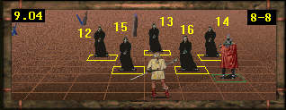

[SPELL HOME]
|
|
FIRESTORM (perhaps the most effective Spell in the game) strikes multiple targets within Line of Sight, causing Damage equivalent to Cost x 4 to each one.No Enemy is Immune to this Spell. Some Enemies suffer less or more than normal Damage:
FOOTNOTE: This Spell is a Line-of-Sight Spell, which means that it sometimes won't hit Enemies who are Shielded by other Enemies. With some knowledge of how the Game works, and some judicious planning, it is often possible to hit the Shielded Enemies. This is a bit tricky, and I think it is best described by using an actual example (from the Map Web):
GRANDSIRE WYVERNS Damage x 2 PANTH TIANDNS Damage x 1.5 TROLLS Damage x 1.5 DREADS Damage x 0.5 MAKALA Damage x 0.5 TSURANI SPELLWEAVERS Damage x 0.5
 Note the Yellow Enemy Numbers (12 - 16). These are not arbitrary, but indicate the "striking order" of the Game. Left to its own devices the Game will hit the Enemies in this order. You, the player, can only choose the first target - after that the "striking order" will be followed.
In this position only 13, 15, and 16 can be hit. 12 and 14 are Shielded. Your worst choice would be to Cast at 13. The Game will then go through the "striking order":
13 HIT! - 12 (Shielded) - 14 (Shielded) - 15 HIT! - 16 HIT!
A better choice would be to Cast at either 15 or 16. If killed, they will "unshield" 12 or 14:
15 KILL! - 12 HIT! - 13 HIT! - 14 (Shielded) - 16 HIT!
16 KILL! - 12 (Shielded) - 13 HIT! - 14 HIT! - 15 HIT!
It goes without saying that the Spellcaster CAN find a square, from which he can hit (and probably kill) ALL these Enemies, during one Round.